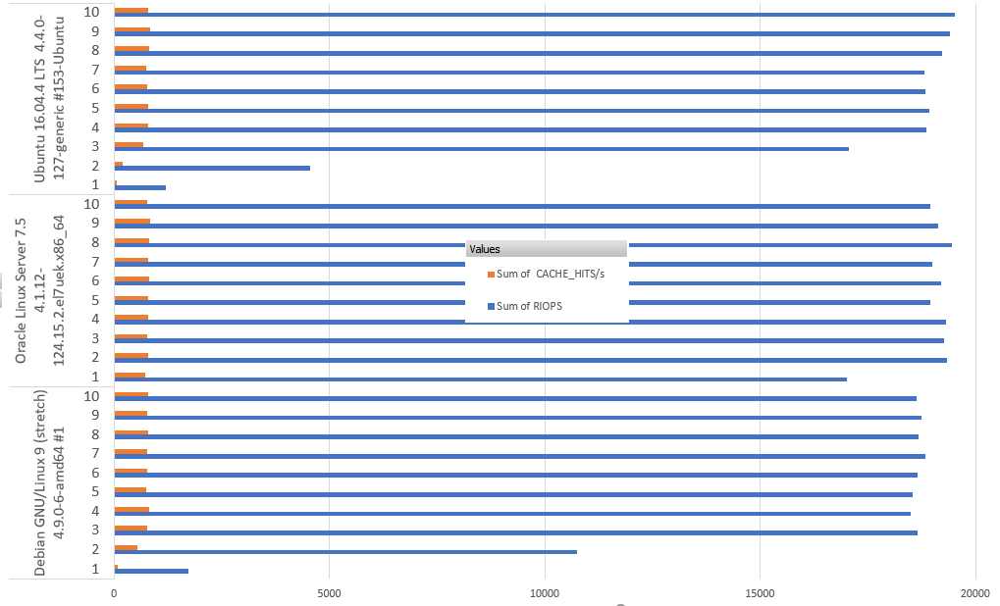

This was first published on https://www.dbi-services.com/blog/which-bitnami-service-to-choose-in-the-oracle-cloud-infrastructure/ (2018-05-25)
Republishing here for new followers. The content is related to the versions available at the publication date.
.
In the Oracle Cloud PaaS you have a marketplace where you can choose your service. Some are packaged from Bitnami and available on multiple OS. My first idea is that in PaaS you do not care about the OS. But Oracle Cloud has this very nice feature where you still have full access to the OS, as root, even in PaaS. Then, you choose the Linux distribution of your preference. Except if performance is different. They run on different Linux kernels. Is Oracle Linux Unbreakable Kernel more efficient?
We need to compare with relevant and reliable measures. And for that I’ve created a Postgres service and used Kevin Closson SLOB method, as I’m a lucky beta tester for pgio. I’ll post later about the creation of the Postgres service in the Oracle Cloud.
First, I’ve run cached IO to measure CPU performance.
I’ve run with the following settings in pgio.conf:
UPDATE_PCT=0
RUN_TIME=300
NUM_SCHEMAS=4
NUM_THREADS=1
WORK_UNIT=255
SCALE=1G
This is 4 schemas with 1GB of data. This fit in my 30GB host. Actually, here is a vmstat sample during the run showing 5GB cached and large free memory:
procs -----------memory---------- ---swap-- -----io---- -system-- ------cpu-----
r b swpd free buff cache si so bi bo in cs us sy id wa st
4 0 0 15508168 12444 5495652 0 0 0 0 1530 1631 28 22 50 0 0
4 0 0 15508292 12452 5495648 0 0 0 4 1506 1564 27 23 50 0 0
There’s no I/O to block device here, which is my goal.
I’ve run 10 times the runit.sh and here is the summary of main result with IOPS:
$ for i in allopc@144.21.82.244.out allopc@144.21.82.255.out allopc@144.21.82.252.out ; do grep os-release $i | grep PRETTY | tail -1 ; grep x86 $i | tail -1 ; grep -E "runit.out.*DBNAME" $i | tail -10 | nl ; done
Fri May 25 11:56:11 UTC 2018 /etc/os-release : PRETTY_NAME="Ubuntu 16.04.4 LTS"
Linux ubuntu 4.4.0-127-generic #153-Ubuntu SMP Sat May 19 10:58:46 UTC 2018 x86_64 x86_64 x86_64 GNU/Linux
1 Fri May 25 11:11:05 UTC 2018 runit.out : DBNAME: pgio. 4 schemas, 1 threads(each). Run time: 300 seconds. RIOPS >393232< CACHE_HITS/s >15711<
2 Fri May 25 11:16:06 UTC 2018 runit.out : DBNAME: pgio. 4 schemas, 1 threads(each). Run time: 300 seconds. RIOPS >398179< CACHE_HITS/s >16000<
3 Fri May 25 11:21:07 UTC 2018 runit.out : DBNAME: pgio. 4 schemas, 1 threads(each). Run time: 300 seconds. RIOPS >402080< CACHE_HITS/s >16019<
4 Fri May 25 11:26:07 UTC 2018 runit.out : DBNAME: pgio. 4 schemas, 1 threads(each). Run time: 300 seconds. RIOPS >404682< CACHE_HITS/s >16086<
5 Fri May 25 11:31:07 UTC 2018 runit.out : DBNAME: pgio. 4 schemas, 1 threads(each). Run time: 300 seconds. RIOPS >408524< CACHE_HITS/s >16327<
6 Fri May 25 11:36:08 UTC 2018 runit.out : DBNAME: pgio. 4 schemas, 1 threads(each). Run time: 300 seconds. RIOPS >409209< CACHE_HITS/s >16390<
7 Fri May 25 11:41:08 UTC 2018 runit.out : DBNAME: pgio. 4 schemas, 1 threads(each). Run time: 300 seconds. RIOPS >403647< CACHE_HITS/s >16327<
8 Fri May 25 11:46:09 UTC 2018 runit.out : DBNAME: pgio. 4 schemas, 1 threads(each). Run time: 300 seconds. RIOPS >397440< CACHE_HITS/s >15894<
9 Fri May 25 11:51:09 UTC 2018 runit.out : DBNAME: pgio. 4 schemas, 1 threads(each). Run time: 300 seconds. RIOPS >397273< CACHE_HITS/s >15956<
10 Fri May 25 11:56:11 UTC 2018 runit.out : DBNAME: pgio. 4 schemas, 1 threads(each). Run time: 300 seconds. RIOPS >396906< CACHE_HITS/s >15904<
Fri May 25 11:54:56 UTC 2018 /etc/os-release : PRETTY_NAME="Debian GNU/Linux 9 (stretch)"
Linux debian 4.9.0-6-amd64 #1 SMP Debian 4.9.88-1+deb9u1 (2018-05-07) x86_64 GNU/Linux
1 Fri May 25 11:09:53 UTC 2018 runit.out : DBNAME: pgio. 4 schemas, 1 threads(each). Run time: 300 seconds. RIOPS >395672< CACHE_HITS/s >15882<
2 Fri May 25 11:14:54 UTC 2018 runit.out : DBNAME: pgio. 4 schemas, 1 threads(each). Run time: 300 seconds. RIOPS >401400< CACHE_HITS/s >16188<
3 Fri May 25 11:19:54 UTC 2018 runit.out : DBNAME: pgio. 4 schemas, 1 threads(each). Run time: 300 seconds. RIOPS >391551< CACHE_HITS/s >15764<
4 Fri May 25 11:24:54 UTC 2018 runit.out : DBNAME: pgio. 4 schemas, 1 threads(each). Run time: 300 seconds. RIOPS >393827< CACHE_HITS/s >15802<
5 Fri May 25 11:29:54 UTC 2018 runit.out : DBNAME: pgio. 4 schemas, 1 threads(each). Run time: 300 seconds. RIOPS >404462< CACHE_HITS/s >16198<
6 Fri May 25 11:34:55 UTC 2018 runit.out : DBNAME: pgio. 4 schemas, 1 threads(each). Run time: 300 seconds. RIOPS >392712< CACHE_HITS/s >15732<
7 Fri May 25 11:39:55 UTC 2018 runit.out : DBNAME: pgio. 4 schemas, 1 threads(each). Run time: 300 seconds. RIOPS >399389< CACHE_HITS/s >16063<
8 Fri May 25 11:44:55 UTC 2018 runit.out : DBNAME: pgio. 4 schemas, 1 threads(each). Run time: 300 seconds. RIOPS >390283< CACHE_HITS/s >15567<
9 Fri May 25 11:49:56 UTC 2018 runit.out : DBNAME: pgio. 4 schemas, 1 threads(each). Run time: 300 seconds. RIOPS >391426< CACHE_HITS/s >15771<
10 Fri May 25 11:54:56 UTC 2018 runit.out : DBNAME: pgio. 4 schemas, 1 threads(each). Run time: 300 seconds. RIOPS >392760< CACHE_HITS/s >15874<
Fri May 25 11:53:58 UTC 2018 /etc/os-release : PRETTY_NAME="Oracle Linux Server 7.5"
Linux b5e501 4.1.12-124.15.2.el7uek.x86_64 #2 SMP Tue May 22 11:52:31 PDT 2018 x86_64 x86_64 x86_64 GNU/Linux
1 Fri May 25 11:08:54 UTC 2018 runit.out : DBNAME: pgio. 4 schemas, 1 threads(each). Run time: 300 seconds. RIOPS >395815< CACHE_HITS/s >15759<
2 Fri May 25 11:13:55 UTC 2018 runit.out : DBNAME: pgio. 4 schemas, 1 threads(each). Run time: 300 seconds. RIOPS >395346< CACHE_HITS/s >16009<
3 Fri May 25 11:18:55 UTC 2018 runit.out : DBNAME: pgio. 4 schemas, 1 threads(each). Run time: 300 seconds. RIOPS >395340< CACHE_HITS/s >15898<
4 Fri May 25 11:23:56 UTC 2018 runit.out : DBNAME: pgio. 4 schemas, 1 threads(each). Run time: 301 seconds. RIOPS >402556< CACHE_HITS/s >16200<
5 Fri May 25 11:28:56 UTC 2018 runit.out : DBNAME: pgio. 4 schemas, 1 threads(each). Run time: 300 seconds. RIOPS >397847< CACHE_HITS/s >16039<
6 Fri May 25 11:33:56 UTC 2018 runit.out : DBNAME: pgio. 4 schemas, 1 threads(each). Run time: 300 seconds. RIOPS >398848< CACHE_HITS/s >16027<
7 Fri May 25 11:38:57 UTC 2018 runit.out : DBNAME: pgio. 4 schemas, 1 threads(each). Run time: 300 seconds. RIOPS >398817< CACHE_HITS/s >16089<
8 Fri May 25 11:43:57 UTC 2018 runit.out : DBNAME: pgio. 4 schemas, 1 threads(each). Run time: 300 seconds. RIOPS >398878< CACHE_HITS/s >15961<
9 Fri May 25 11:48:57 UTC 2018 runit.out : DBNAME: pgio. 4 schemas, 1 threads(each). Run time: 300 seconds. RIOPS >395885< CACHE_HITS/s >15606<
10 Fri May 25 11:53:58 UTC 2018 runit.out : DBNAME: pgio. 4 schemas, 1 threads(each). Run time: 300 seconds. RIOPS >395965< CACHE_HITS/s >15893<
I’ve put this data in Excel to show the picture where, basically, all 3 environments perform exactly the same:
For the second test, I wanted to test physical IOPS. But not to measure disk performance, which is the same for my 3 services. I want to do physical I/O only to see if there’s a difference in context switches when doing non-blocking I/O – which we do not see in the previous test because they were filesystem cache hits. Then I kept the small scale of 4 sessions with 1GB so that there’s a good chance that it remains in the storage cache. But I reduced the memory in order to have less than 4GB in filesystem cache.
pgio comes with an utility (pgio_reduce_free_memory.sh) to allocate enough huge page to limit the filesystem cache:
$ sudo bash pgio/pgio_reduce_free_memory.sh 2
Taking action to reduce free memory down to 2GB available.
total used free shared buff/cache available
Mem: 30886100 124676 30698952 19088 62472 30469900
Swap: 0 0 0
Attempting to allocate 13966 huge pages
MemAvailable: 1869148 kB
HugePages_Total: 13966
This is perfect: 13966 huge pages, that’s 27 GB in my 30GB VM that cannot be used by the filesystem, so that my 4x1GB will need I/O calls to the disk.
Here is a vmstat extract to confirm that the filesystem cache is less than 2GB
procs -----------memory---------- ---swap-- -----io---- ---system-- ------cpu-----
r b swpd free buff cache si so bi bo in cs us sy id wa st
0 4 0 154416 2344 2015204 0 0 93025 0 32425 24295 2 3 51 44 1
0 4 0 153816 2428 2015848 0 0 94923 21 32400 24414 2 3 51 44 1
runit.sh calls vmstat with a 3 seconds delay so you can see a higher number of block/s and context switches.
Here are the interesting lines from the runit.sh output:
$ for i in allopc@144.21.89.85.out allopc@144.21.89.53.out allopc@144.21.89.26.out ; do grep os-release $i | grep PRETTY | tail -1 ; grep x86 $i | tail -1 ; grep -E "runit.out.*DBNAME" $i | tail -10 | nl ; done
Fri May 25 14:58:47 UTC 2018 /etc/os-release : PRETTY_NAME="Ubuntu 16.04.4 LTS"
Linux ubuntu 4.4.0-127-generic #153-Ubuntu SMP Sat May 19 10:58:46 UTC 2018 x86_64 x86_64 x86_64 GNU/Linux
1 Fri May 25 14:13:40 UTC 2018 runit.out : DBNAME: pgio. 4 schemas, 1 threads(each). Run time: 301 seconds. RIOPS >1214< CACHE_HITS/s >55<
2 Fri May 25 14:18:42 UTC 2018 runit.out : DBNAME: pgio. 4 schemas, 1 threads(each). Run time: 300 seconds. RIOPS >4545< CACHE_HITS/s >195<
3 Fri May 25 14:23:43 UTC 2018 runit.out : DBNAME: pgio. 4 schemas, 1 threads(each). Run time: 300 seconds. RIOPS >17053< CACHE_HITS/s >682<
4 Fri May 25 14:28:43 UTC 2018 runit.out : DBNAME: pgio. 4 schemas, 1 threads(each). Run time: 300 seconds. RIOPS >18865< CACHE_HITS/s >801<
5 Fri May 25 14:33:44 UTC 2018 runit.out : DBNAME: pgio. 4 schemas, 1 threads(each). Run time: 300 seconds. RIOPS >18933< CACHE_HITS/s >794<
6 Fri May 25 14:38:44 UTC 2018 runit.out : DBNAME: pgio. 4 schemas, 1 threads(each). Run time: 300 seconds. RIOPS >18832< CACHE_HITS/s >777<
7 Fri May 25 14:43:45 UTC 2018 runit.out : DBNAME: pgio. 4 schemas, 1 threads(each). Run time: 300 seconds. RIOPS >18826< CACHE_HITS/s >757<
8 Fri May 25 14:48:46 UTC 2018 runit.out : DBNAME: pgio. 4 schemas, 1 threads(each). Run time: 301 seconds. RIOPS >19229< CACHE_HITS/s >819<
9 Fri May 25 14:53:46 UTC 2018 runit.out : DBNAME: pgio. 4 schemas, 1 threads(each). Run time: 300 seconds. RIOPS >19408< CACHE_HITS/s >835<
10 Fri May 25 14:58:47 UTC 2018 runit.out : DBNAME: pgio. 4 schemas, 1 threads(each). Run time: 300 seconds. RIOPS >19524< CACHE_HITS/s >799<
Fri May 25 14:58:41 UTC 2018 /etc/os-release : PRETTY_NAME="Debian GNU/Linux 9 (stretch)"
Linux debian 4.9.0-6-amd64 #1 SMP Debian 4.9.88-1+deb9u1 (2018-05-07) x86_64 GNU/Linux
1 Fri May 25 14:13:35 UTC 2018 runit.out : DBNAME: pgio. 4 schemas, 1 threads(each). Run time: 300 seconds. RIOPS >1727< CACHE_HITS/s >82<
2 Fri May 25 14:18:36 UTC 2018 runit.out : DBNAME: pgio. 4 schemas, 1 threads(each). Run time: 300 seconds. RIOPS >10743< CACHE_HITS/s >534<
3 Fri May 25 14:23:37 UTC 2018 runit.out : DBNAME: pgio. 4 schemas, 1 threads(each). Run time: 300 seconds. RIOPS >18660< CACHE_HITS/s >763<
4 Fri May 25 14:28:37 UTC 2018 runit.out : DBNAME: pgio. 4 schemas, 1 threads(each). Run time: 300 seconds. RIOPS >18496< CACHE_HITS/s >811<
5 Fri May 25 14:33:38 UTC 2018 runit.out : DBNAME: pgio. 4 schemas, 1 threads(each). Run time: 300 seconds. RIOPS >18537< CACHE_HITS/s >757<
6 Fri May 25 14:38:38 UTC 2018 runit.out : DBNAME: pgio. 4 schemas, 1 threads(each). Run time: 300 seconds. RIOPS >18647< CACHE_HITS/s >774<
7 Fri May 25 14:43:39 UTC 2018 runit.out : DBNAME: pgio. 4 schemas, 1 threads(each). Run time: 300 seconds. RIOPS >18838< CACHE_HITS/s >775<
8 Fri May 25 14:48:40 UTC 2018 runit.out : DBNAME: pgio. 4 schemas, 1 threads(each). Run time: 300 seconds. RIOPS >18686< CACHE_HITS/s >786<
9 Fri May 25 14:53:40 UTC 2018 runit.out : DBNAME: pgio. 4 schemas, 1 threads(each). Run time: 300 seconds. RIOPS >18742< CACHE_HITS/s >782<
10 Fri May 25 14:58:41 UTC 2018 runit.out : DBNAME: pgio. 4 schemas, 1 threads(each). Run time: 301 seconds. RIOPS >18634< CACHE_HITS/s >793<
Fri May 25 14:57:25 UTC 2018 /etc/os-release : PRETTY_NAME="Oracle Linux Server 7.5"
Linux b5e501 4.1.12-124.15.2.el7uek.x86_64 #2 SMP Tue May 22 11:52:31 PDT 2018 x86_64 x86_64 x86_64 GNU/Linux
1 Fri May 25 14:12:20 UTC 2018 runit.out : DBNAME: pgio. 4 schemas, 1 threads(each). Run time: 300 seconds. RIOPS >17025< CACHE_HITS/s >721<
2 Fri May 25 14:17:21 UTC 2018 runit.out : DBNAME: pgio. 4 schemas, 1 threads(each). Run time: 300 seconds. RIOPS >19331< CACHE_HITS/s >792<
3 Fri May 25 14:22:21 UTC 2018 runit.out : DBNAME: pgio. 4 schemas, 1 threads(each). Run time: 300 seconds. RIOPS >19271< CACHE_HITS/s >770<
4 Fri May 25 14:27:22 UTC 2018 runit.out : DBNAME: pgio. 4 schemas, 1 threads(each). Run time: 300 seconds. RIOPS >19324< CACHE_HITS/s >802<
5 Fri May 25 14:32:22 UTC 2018 runit.out : DBNAME: pgio. 4 schemas, 1 threads(each). Run time: 300 seconds. RIOPS >18943< CACHE_HITS/s >802<
6 Fri May 25 14:37:23 UTC 2018 runit.out : DBNAME: pgio. 4 schemas, 1 threads(each). Run time: 300 seconds. RIOPS >19202< CACHE_HITS/s >818<
7 Fri May 25 14:42:24 UTC 2018 runit.out : DBNAME: pgio. 4 schemas, 1 threads(each). Run time: 300 seconds. RIOPS >18999< CACHE_HITS/s >803<
8 Fri May 25 14:47:24 UTC 2018 runit.out : DBNAME: pgio. 4 schemas, 1 threads(each). Run time: 300 seconds. RIOPS >19459< CACHE_HITS/s >823<
9 Fri May 25 14:52:24 UTC 2018 runit.out : DBNAME: pgio. 4 schemas, 1 threads(each). Run time: 300 seconds. RIOPS >19138< CACHE_HITS/s >836<
10 Fri May 25 14:57:25 UTC 2018 runit.out : DBNAME: pgio. 4 schemas, 1 threads(each). Run time: 300 seconds. RIOPS >18958< CACHE_HITS/s >781<
And I’ve graphed them: 
As I hit the storage here, I needed a few runs to warm up the storage cache and get the I/O I wanted: low latency rfom storage cache, but involving context switches on the server. And basically, all 3 alternatives (Ubuntu with Linux 4.4, Debian with Linux 4.9 and OEL with the unbreakable kernel 4.1) behave the same. From these tests, I can say that the performance is not the major criteria to choose one of the PaaS alternatives. Just choose the distribution you like.
About pgio, it is great to get performance measures that are reliable and focused on what I want to test. I had no problems to run it on all 3 platforms. Just needed to apt-get / yum to install systat and bc which are not there by default.
{kind=link}
{kind=link}